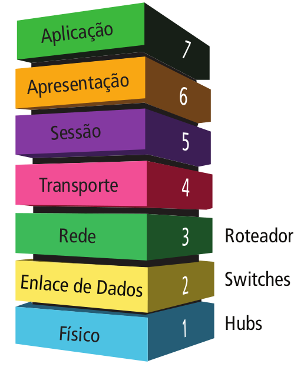
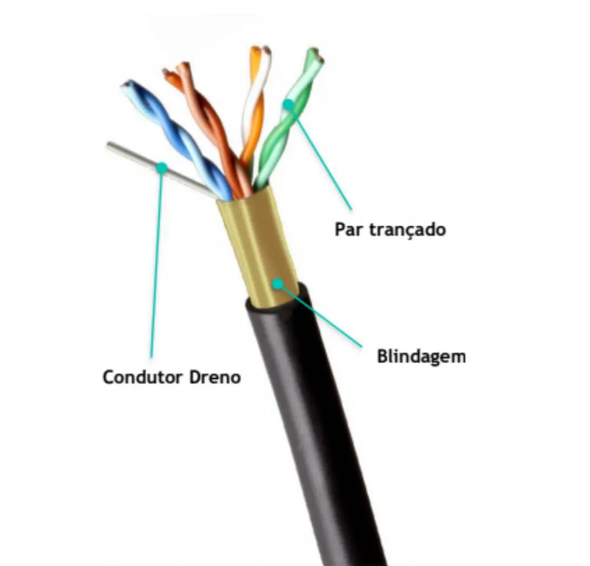
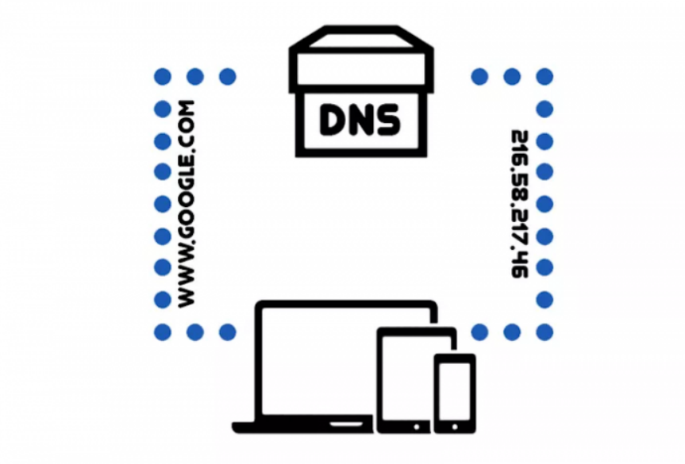
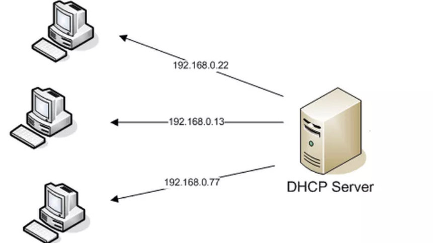
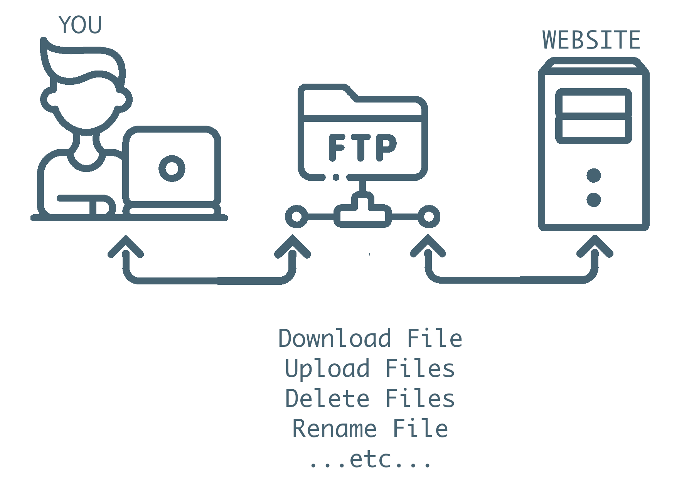

É um modelo conceitual criado pela Organização Internacional de Normalização que permite que diversos sistemas de comunicação se comuniquem usando protocolos padronizados.
Sua importância é enorme, pois ajuda usuários e profissionais a determinar o hardware e software necessários para construir suas redes, por exemplo. Além disso, facilita na hora de encontrar problemas em potencial, já que isso pode ser visualizado de forma individual em cada camada.
O TCP/IP é fundamental para a rede de internet. Esses dois protocolos garantem que pacotes de informações cheguem a seu destino de forma correta e segura. Dessa forma, conseguimos tratar e definir os dados entre os dispositivos antes de alcançarem seus destinos.
Sua importância é enorme. Sem a presença desse conjunto, seria impossível definir os padrões de transmissão, que são adotados por diferentes dispositivos das mais variadas aplicações.


Quando o assunto é cabeamento de rede, os cabos de fibra óptica são as principais tendências, mas, em muitos lugares, a transmissão de dados ainda depende de conexões com cabos convencionais. Diversos cabos podem fazer parte de uma rede, entre eles o cabo UTP, o mais utilizado atualmente para levar informações de um ponto ao outro.
A taxa de transmissão de cabos par-trançado pode variar entre 300 e 115.000 bps. Devem existir pelo menos dois pares de fios internos a este cabo: um para enviar e outro para receber dados.
O DNS que permite que você digite o nome de um domínio, como tecnoblog.net na barra de endereços, em vez de uma longa sequência de números difícil de decorar.
Cada nome de domínio tem um único número IP e você não verá mais de um site com a mesma URL. Porém, nomes de domínios diferentes podem encaminhar você de um site para outro. Basta que o responsável compre o direito de usar todos ao mesmo tempo.


O protocolo DHCP é um protocolo de cliente/servidor que fornece automaticamente um host IP (Protocolo de Internet) com seu endereço IP e outras informações de configuração relacionadas, como a máscara de sub-rede e o gateway padrão.
É um recurso de muito importância quando se trata de uma rede com muitos computadores, o DHCP facilita a administração e distribuição de endereços IP para os computadores da rede
O FTP (File Transfer Protocol) permite que desenvolvedores de sites promovam mudanças de maneira conveniente e segura, mesmo que você tenha que transferir um grande número de arquivos. Em português, ele se traduz como Protocolo de Transferência de Arquivos.
O protocolo FTP permite que usuários autorizados possam fazer download e upload de arquivos de um servidor FTP, um computador que armazena os dados.


O HTTPS é uma sigla para Hypertext Transfer Protocol Secure. Essa é uma versão de protocolo idêntica ao HTTP, com a diferença de ser sobre uma camada totalmente SSL.
O HTTP é praticamente o mesmo protocolo HTTPS mas sem o “S” de “Secure”, ou seja, o Protocolo HTTP é inseguro.
Um servidor web é um computador responsável pelo armazenamento, processamento e entrega dos arquivos dos sites para os navegadores.